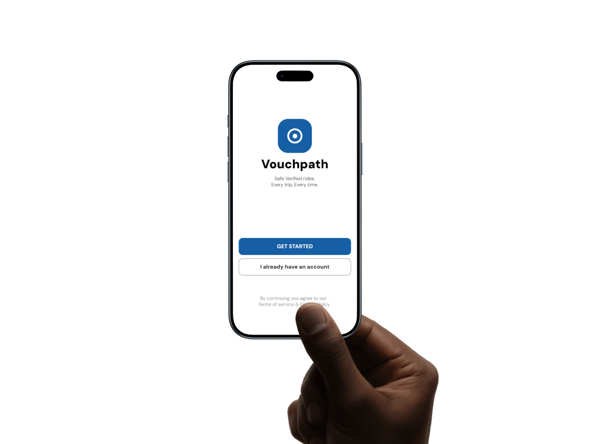

Vouchpath
Abuja, Nigeria | Ride-hailing Safety App
Vouchpath is a ride-hailing safety app built for the Nigerian market — specifically designed around the trust gap between riders and drivers that existing platforms don't solve. Safety is not a feature here. It's the entire reason the product exists.
Tools: Figma, Protopie, Framer, FigJam
View Full Case Study